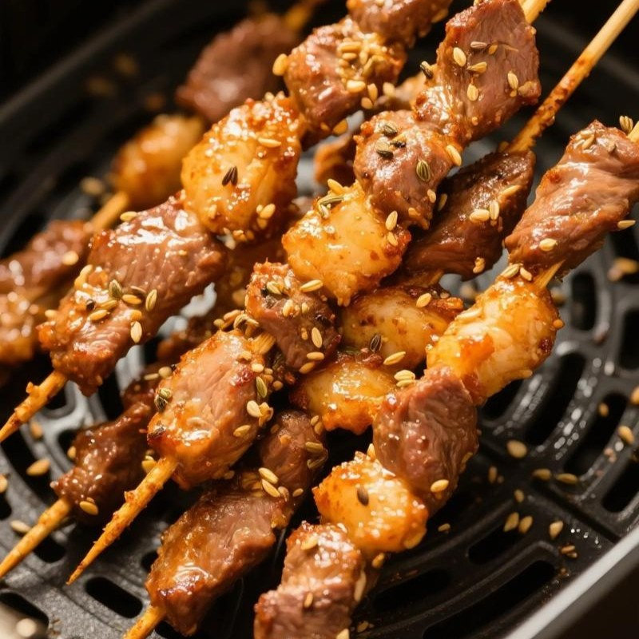

The World of Xinjiang Uyghur Cuisine
Xinjiang cuisine is nurtured by the ancient history of the Silk Road and vast natural landscapes, possessing a truly unique food culture. Expansive oases and rich pastoral resources give rise to aromatic roasted lamb, bold spices, hand-pulled noodles, and hearty tandoor breads that capture the romantic essence of Central Asia.
Signature Dishes
Lamb Skewers
(Kawap - Charcoal-Grilled Lamb Skewers)
Succulent lamb chunks generously seasoned with cumin and chili flakes, then grilled over hot charcoal. It is the iconic street food of Xinjiang with an irresistible aroma.

Naan & Baked Samsa
(Naan Bread / Samsa)
Crusty round flatbreads slapped onto the inner clay walls of a blazing tandoor, alongside crispy samsa pastries stuffed with juicy diced lamb and onions. Both are beloved daily staples.

Laghman (Pulled Noodles), Milk Tea & Yogurt Zongzi
Chewy hand-pulled noodles topped with a rich lamb, tomato, and bell pepper stir-fry (Laghman), savory salted milk tea, and delicate sweet rice dumplings drenched in thick artisan yogurt and honey syrup.
History of Xinjiang Cuisine
1. [Steppe Era] Sheep & Milk
Region: Mongolian Plateau and northern steppes
Lifestyle: Nomadic life following water and pastures.

Diet: Fresh mutton, fermented mare's milk, and natural dairy.

Key note: A pure pastoral nomadic food tradition.
2. [Oasis Era] Wheat & Bread
Region: Migration into Xinjiang oases along the Silk Road
Lifestyle: Settled oasis agriculture and town building.
Diet: Cultivated wheat introduced from West Asia, baking flatbreads and stretching noodles.
Key note: Over 1,000 years ago, historical texts already recorded 13 kinds of flatbreads.
3. [Fusion Era] Convergence of East & West
Region: Crossroads of trade (Tarim Basin)
Lifestyle: Upholding halal traditions while absorbing diverse cultures.
Diet: Integrated Chinese wok-frying techniques, regional spices, and later Russian baking influences.
The Modern Legacy
The fusion of 'pastoral fresh meats' + 'oasis wheat flour' + Chinese cooking methods created the vibrant, multi-layered Xinjiang cuisine we celebrate today.